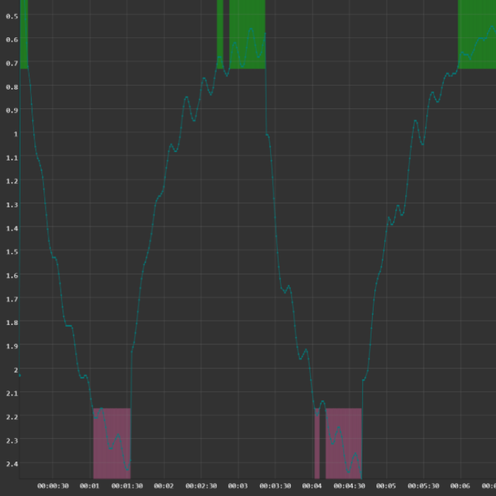
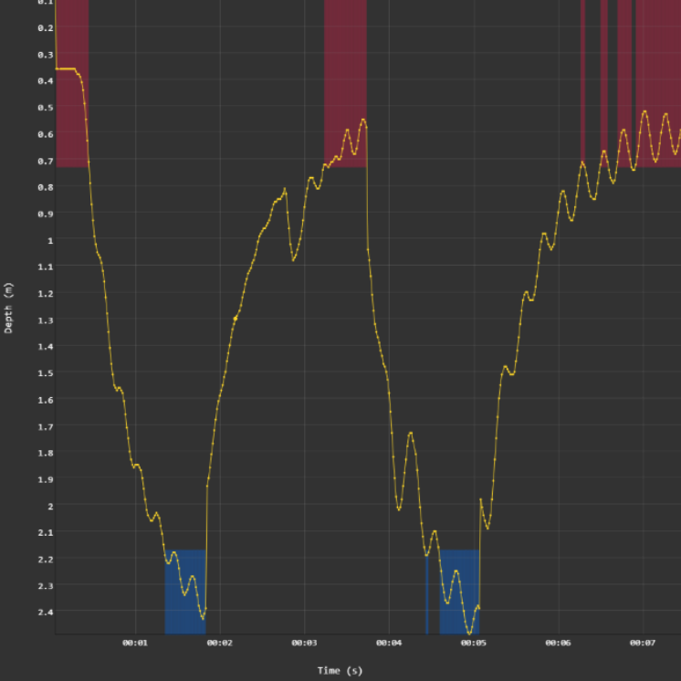
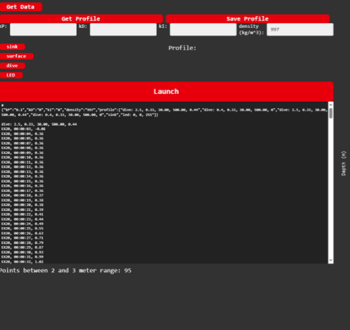
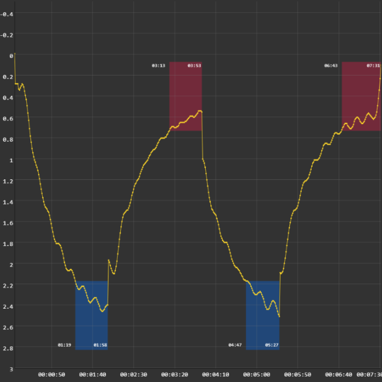

I implemented this using C++

Maintain depth at 2.5 metres and 40 centimetres during each profile
Transmit collected data after recovery
Graph the float’s depth over time

Added rectangular sections to show when float is at correct height
Changed graph colours to improve visibility and colour consistency
Limited depth squares to only include greater than required time at depth
Added time stamps on ends of each measuring period

